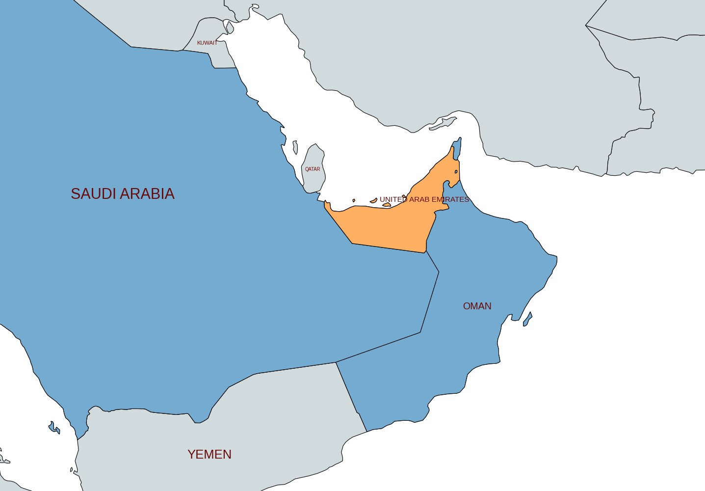
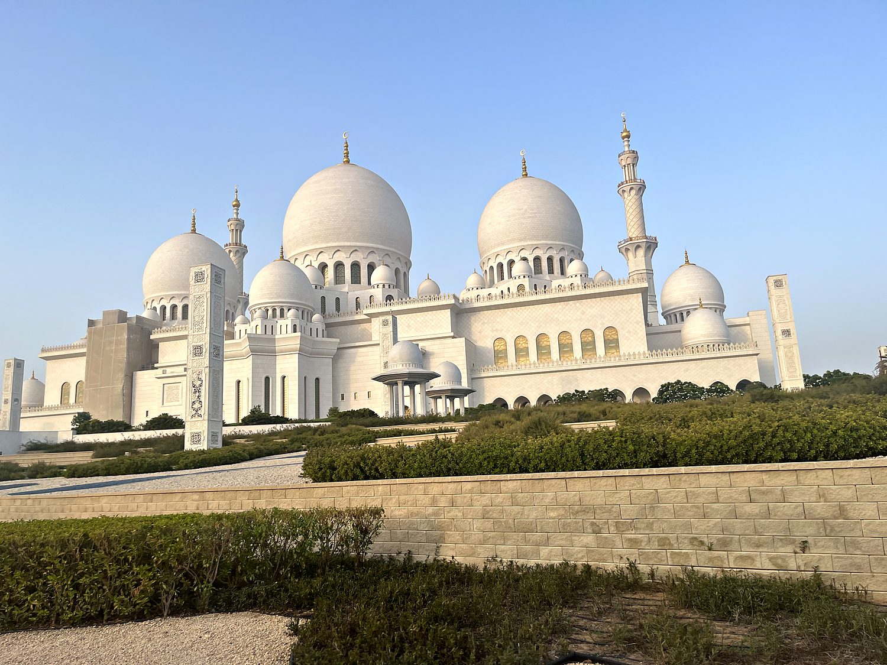
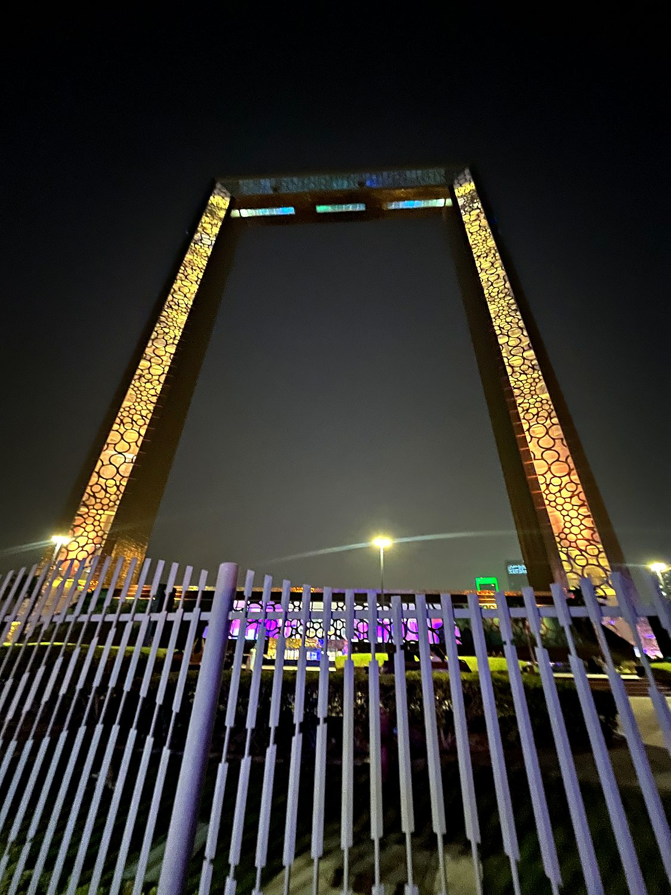
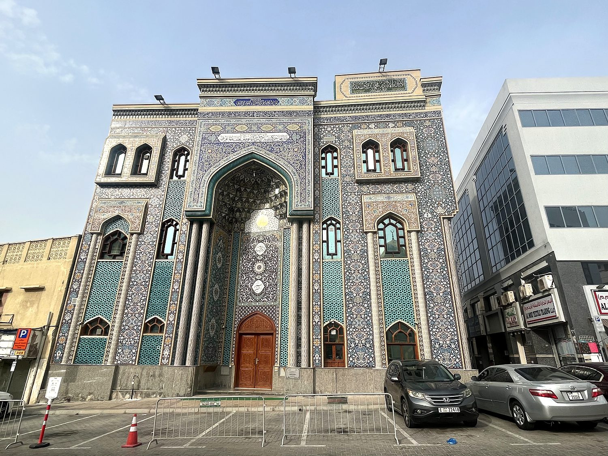

I passed through the United Arab Emirates in the summer of 2023, working my way from Abu Dhabi to Dubai. The UAE really is two countries: a rich-man’s paradise for local Arabs and foreigners, and a gritty warehouse for the South Asian workers who actually do the work. For this reason, despite its reputation as a glitzy tourist trap, the UAE can be surprisingly affordable. The contrast was a running joke of the trip: I would spend my days gawking at the world's most expensive real estate, and my nights in a bug-friendly hostel eating two-and-a-half-dollar delicious authentic Indian food. The Emirates in July is less a place you visit than a place you survive; on my worst afternoon the humidity pushed the felt temperature past fifty degrees Celsius, and the streets were so uniformly deserted that I concluded the region would make an ideal training ground for the first inhabitants of Mars. And yet the moment the sun set, the shopping malls filled to bursting, which tells you almost everything about how life in the modern Gulf actually works.
The UAE's two great cities play strikingly different roles. Abu Dhabi, the capital, is the seat of political power and the holder of the vast majority of the country's oil. It wears its wealth with a certain reserved formality: grand mosques, cultural institutions like the Louvre Abu Dhabi, and the restored Qasr Al Hosn fort that recalls the emirate's origins as a modest pearling and fishing settlement. Dubai, ninety minutes up the coast, is the opposite temperament entirely: brash, vertical, and relentlessly reinvented, having pivoted from a sleepy trading port into a global hub of finance, tourism, and record-breaking architecture. I rode the smooth, dizzyingly fast elevator to the top of the Burj Khalifa, which at 828 meters still is comfortably the tallest building in the world. I looked down on a skyline that, only a generation ago, was largely desert. It is a genuinely disorienting thing to witness a city that has essentially willed itself into existence within a single lifetime.

For most of its history, the strip of coast now called the UAE was home to Bedouin tribes and pearl divers, eking out a living from the desert and the Gulf along a shoreline that European powers once dubbed the “Pirate Coast.” In the nineteenth century the ruling sheikhs signed a series of treaties with Britain, which is how the area came to be known as the Trucial States. Everything changed with the discovery of oil in the late 1950s: what had been one of the poorest corners of Arabia was suddenly flush with the resource that would remake it. In 1971, as Britain withdrew from the region, six of the emirates united into a single federation under the leadership of Sheikh Zayed bin Sultan Al Nahyan, with a seventh joining the following year. This created the United Arab Emirates as we know it today.
Sheikh Zayed, revered as the father of the nation, used Abu Dhabi's oil wealth to build hospitals, schools, and infrastructure at breakneck speed. The federation he founded has since become one of the wealthiest and most stable states in the Arab world. Its rulers have been keenly aware, however, that oil is finite, and nowhere more so than in Dubai, which holds relatively little of it. Dubai's answer was to bet everything on becoming a place the world could not ignore: a duty-free crossroads of trade, aviation, and tourism, stacked with superlatives like the tallest tower, the largest mall, and an indoor ski slope in the desert. The result is a country that is simultaneously deeply traditional and aggressively futuristic, where the call to prayer echoes over air-conditioned shopping cathedrals. I also discovered when I could not reach my family on WhatsApp that the state still quietly bans internet calling to protect its telecom revenues.
The Sheikh Zayed Grand Mosque in Abu Dhabi is, without much competition, the most beautiful building I saw in the Emirates. Completed in 2007 and named for the nation's founding father who is buried on its grounds, it is one of the largest mosques in the world, a vision of white marble crowned by eighty-two domes and encircled by reflecting pools. Inside, it holds one of the world's largest hand-knotted carpets and a set of chandeliers dripping with Swarovski crystal, while the walls and columns bloom with inlaid floral motifs of colored stone. I reached it, in a detail that captures the country perfectly, through an underground glass entrance that funnels every visitor past a shopping mall before releasing them into the courtyard. The building is so serene that I badly wished I could simply sit in it for an hour, which the flow of visitors sadly did not permit.

The Dubai Frame is exactly what it sounds like: a 150-meter-tall golden picture frame straddling a park, through which you are meant to view the city. The concept is more clever than it first appears. Stand on one side and you look out over old Dubai, the low-rise neighborhoods of Deira and Bur Dubai that grew up around the Creek. Turn around and you face the glittering towers of the new city. The Frame is, in other words, a monument to Dubai's own astonishing transformation, a place designed to let you literally frame the before and after of a metropolis that reinvented itself in a matter of decades. Lit up in gold against the night sky, it is unabashedly theatrical – which is to say, it is deeply on brand for Dubai.

For all its skyscrapers, Dubai does have a history, and you find it along Dubai Creek, the saltwater inlet where the city began as a pearling and trading port long before the first tower rose. I spent a low-key afternoon wandering the old quarters of Bur Dubai and Deira, crossing the Creek on a battered wooden abra water taxi for the price of a few coins and browsing the gold and spice souks and the textile markets. Here, I enjoyed haggling a shirt down by a factor of seven from its exhorbitant opening price with a friendly Afghan trader. The traditional wind-tower architecture and the narrow lanes here feel like a different city entirely from the Dubai of the Burj Khalifa. The neighborhood serves as a reminder that beneath the spectacle, Dubai was a place of merchants and dhow captains for a long time before it became a place of superlatives.
